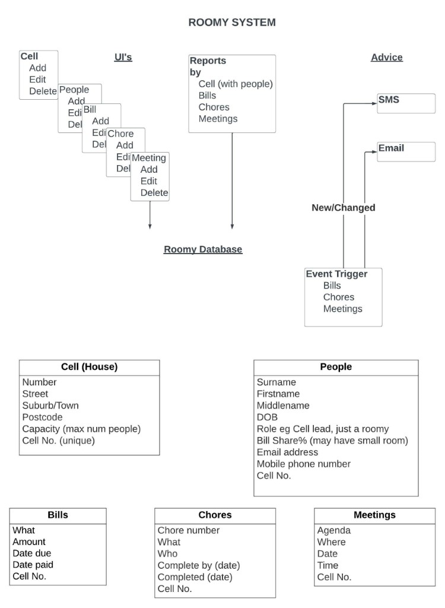
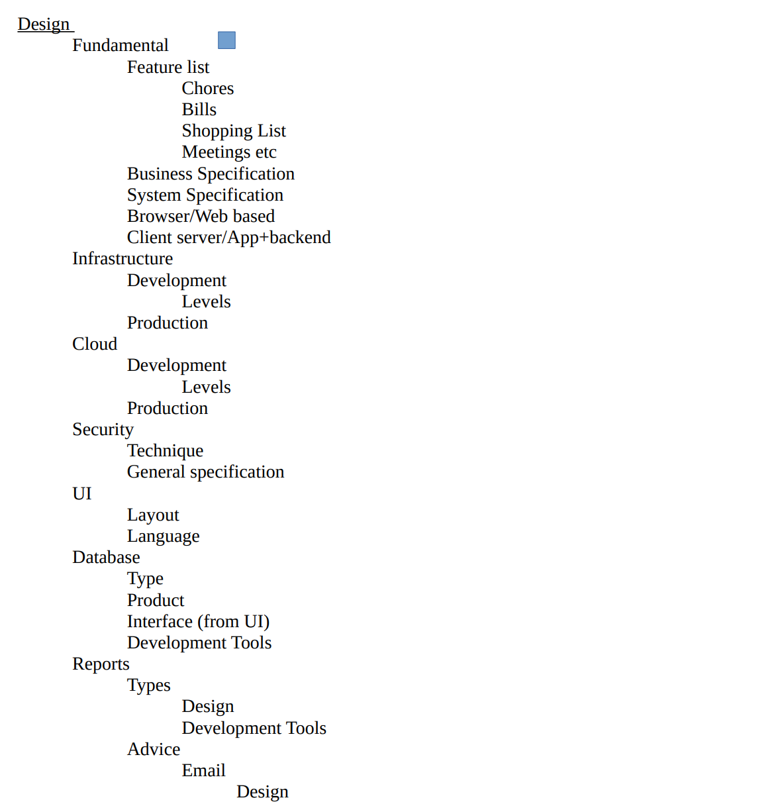
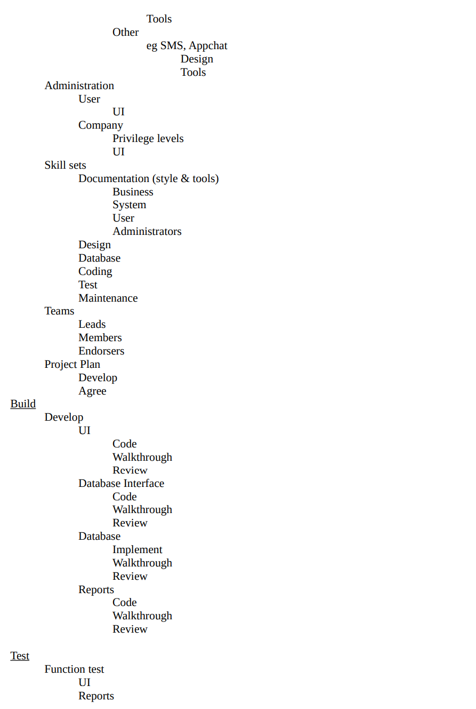
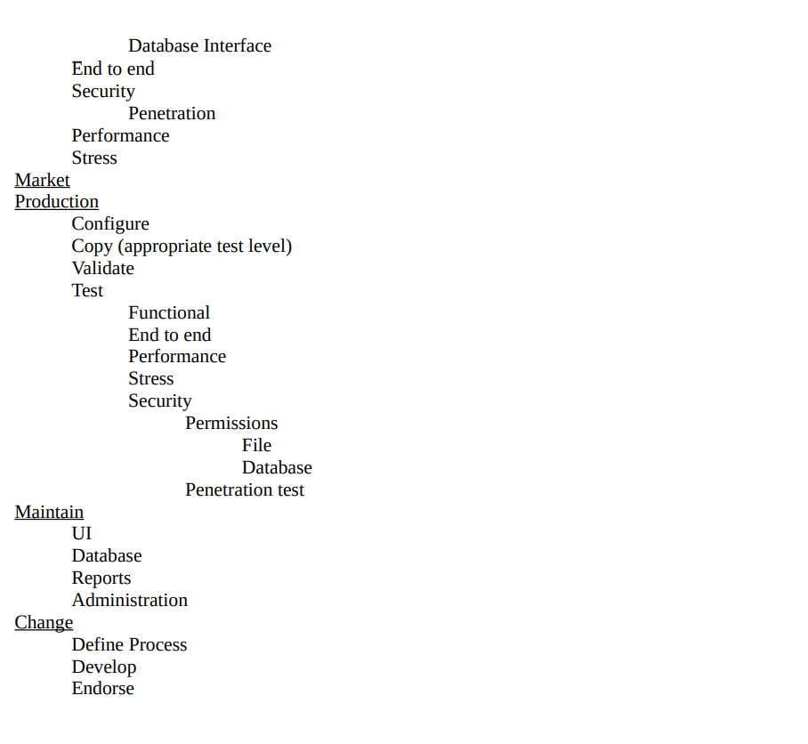
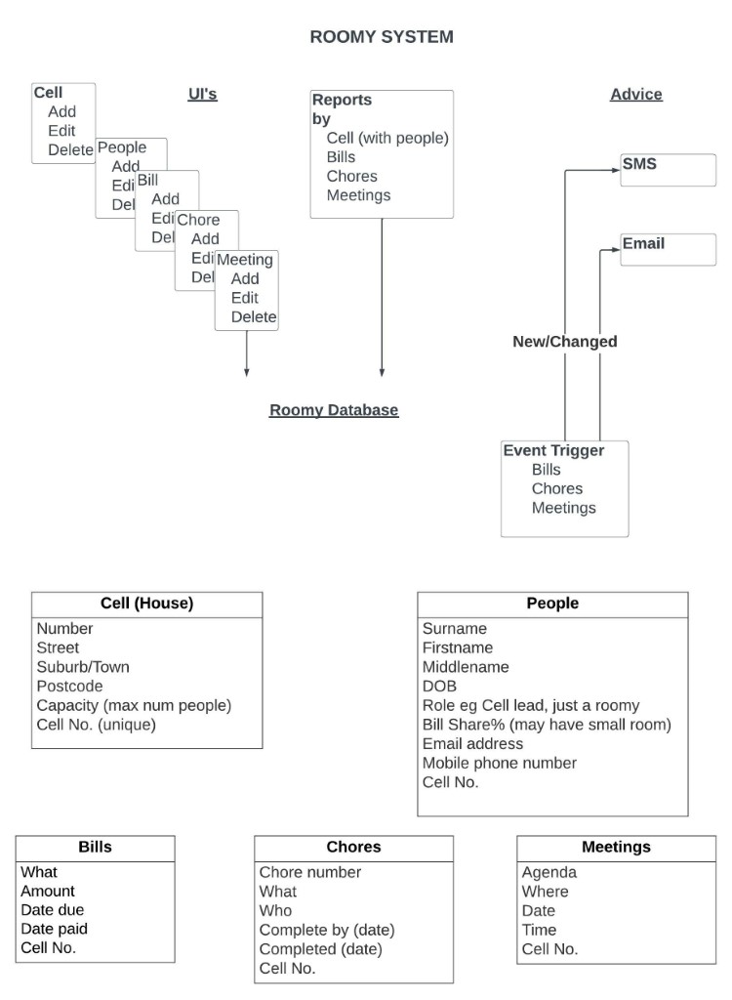
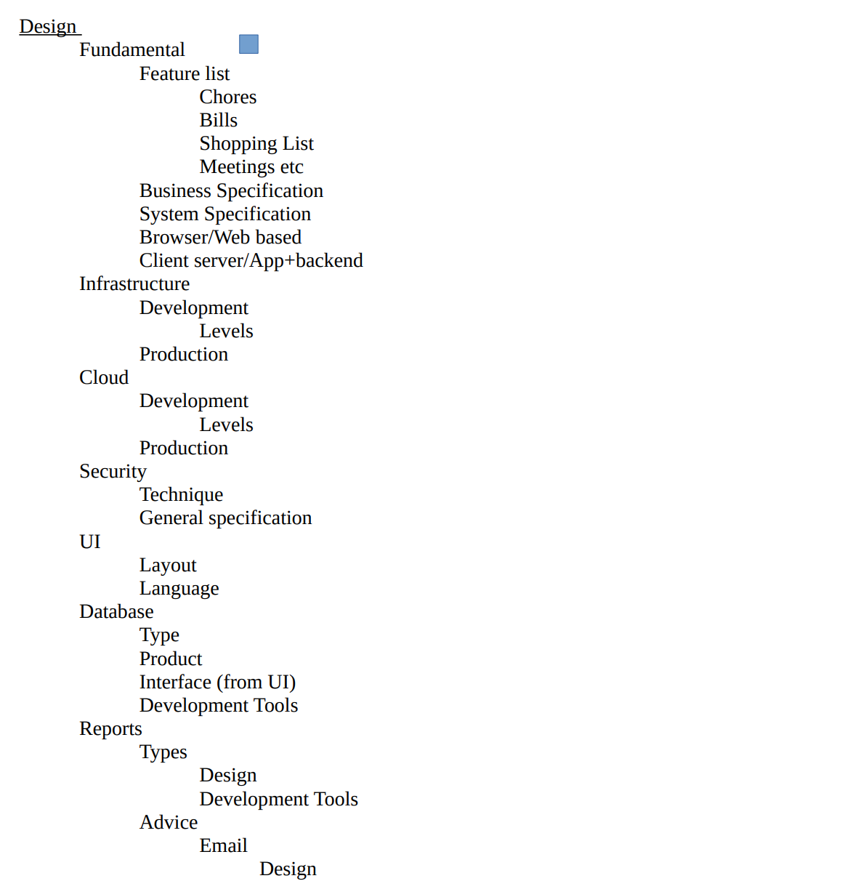
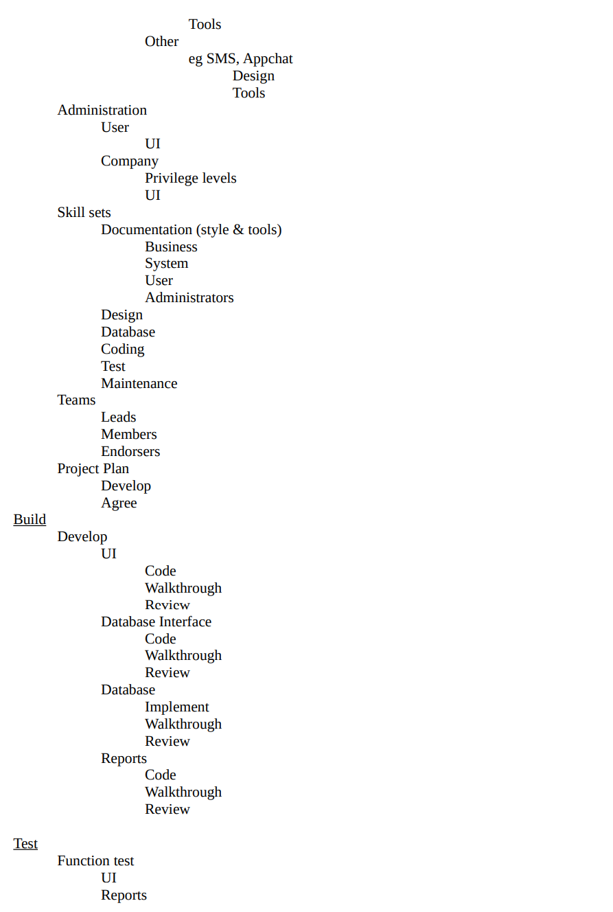
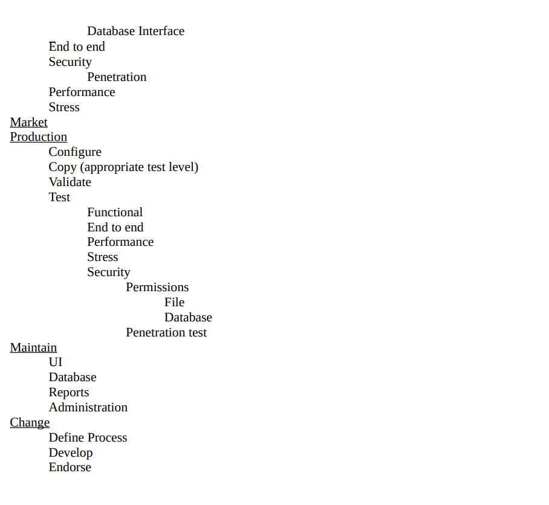

Project Idea
Overview
RoomyPlanner is a website application that seeks to make the roommate lifestyle more convenient, making the conversation of “who’s doing what chore”? or “how much are bills and when are they due?” easier to decide and keep track of when everything is laid out in an application. This project will be a web-based application first before moving into a mobile friendly application to be more accessible to the modern age.
Motivation
Living with roommates can be hard to get used to, especially for someone who has moved out for the first time. There can be people who are lazy and mess up the house while not doing any chores or are annoying to others. The ones affected might not have the courage or be too busy to speak up and tell their roommates how they are bothering them, which only causes more frustration to build up. Even maintaining a chore roster can prove difficult, as people often forget if they are meant to do anything and there can often be communication breakdown since no one is usually in the same place at the same time.
This is where RoomyPlanneri comes in. This project has more of a focus on general convenience and seeks to make the experience of living with roommates more organized and stress free. Users can keep their chore schedules all in one place and communicate with other roommates or manage things without needing face-to-face interaction. This can help to ease tensions between people who have different schedules or lifestyles living in the same house and let everyone carry on with their lives without needing to worry about who's doing what or whether everyone knows what they need to do.
RoomyPlanner can be used by renters to smoothen the process of finding and setting up with tenants. With the bills feature payment plans can be set up digitally so the tenant is reminded of when they must pay rent without the need for paper documents that can easily be lost. The renter can stay connected with the tenant so if there are any unexpected events or concerns, they can be communicated quickly to the renter.
"Increasing digitalization and use of new technologies have pushed employment policies in new directions worldwide…… the digital and technical evolution……is playing a critical role in supporting a recovery from the pandemic and other labor market disruptions." (ILO, 2022) The digital and technical evolution not just bring changes to jobs, but also has the capability will bring the change to our everyday life.
Description
This application's main planned features are Chore Allocation, Shopping Lists, Expense Management and Group Chat. More features or expansions could be added in future updates.
The general layout of the application will have a side bar menu as the main area of navigation between features. A search bar will be on the top to make finding certain features easier. Notifications and profile settings are accessed through clickable icons on the top right, and content will be displayed on the rest of the screen.
When the user first logs into the app, they are shown the home screen. The home screen will display upcoming chores, bills or other duties pertaining to the user. Recently sent messages will have a notification displayed in the bottom right corner.
The main interface that most of the features are based on is a monthly calendar where users can see all the chores, bills, and special events and when they are due. They can toggle the calendar with filters to see only certain types of items on the calendar, or filter by what was added by which user. There is also the option to add events that are neither chores nor bills, like birthdays or a roommate's friends, family or partners coming over so that everyone in the house can prepare accordingly.
The aesthetic of the app is planned to be cosy, using a warm and earthy colour palette, giving a paper-like texture to the UI, and using hand-written fonts to resemble real life notepads and calendars.
Chore Allocation

Chores can be displayed either in list view, which can be sorted either by date, person assigned, or type of chore, or calendar view, which can display the chores for each week, month, or year. They can be edited by hovering over the chore and clicking 'edit' from a pop up that appears.
Chores can be assigned to each member of the household on a schedule. If someone wants to add a chore, they can click the 'add chore' button on the bottom right and give it a name and description, as well as assigning member(s) to the chore and deciding how often the chore needs to be completed. They can also choose to rotate who needs to do the chore each week if they have assigned multiple people to the same chore and make custom rotation sets by dragging and dropping the assigned members in an order of their choosing. Users can also attach files to certain chores or recipes if they have to do with meal prep.
Notifications will remind users who have not completed their chores to do them or give them the option to do them later. Once they have completed a chore, users can mark their chores complete either from the home screen or chores screen.
Shopping List
This is a collaborative notepad where users can make and add items to a main shopping list or make separate ones for individuals or special occasions. They can also save shopping lists for certain recipes as well as the instructions to make them. Each member's contributions are labelled so all the house members can see who made what suggestion.
When an item on the shopping list, whether it be food, household appliances or other things, is acquired, it can be crossed off the shopping list and the initials of the person who got the item will be shown. The shopping lists can be marked as once-off or reoccurring. If a shopping list is entirely crossed off, it will be moved to a separate tab of past shopping lists unless it is marked as reoccurring. Users can also customize their shopping list by changing the colour, font, or style to differentiate one shopping list from the others. These shopping lists can be printed, downloaded, or transferred to other devices for easier access while on the go.
Expense Management
This feature work similarly to the Chore Allocation feature but is instead for expenses or bills for rent. The user can get in touch the renter to set up the dates for rent each month, which will be displayed on the calendar. Users will be able to divide the expenses with their roommates, and a progress bar will display how much of the expense has been paid. Notifications can be turned on to remind the user of approaching payment dates. It can be synced with the user's bank account to allow the user to pay quickly from the app. Expenses can also be logged with separate tabs and calculated against the user's current savings if they have the app synced with their bank account.
Group Chat
A group chat feature that functions similarly to other messaging apps, allowing roommates to interact, organize roles, inform others of changes to the roster, or tell each other if they have commitments that prevent them from doing chores or paying bills and allocate them to others if necessary.
Tools + Tech
-Html, CSS and Java Script: These will act as building block for this web application and make sure that user will have seamless experience with UI on different devices.
-Java/PHP/Python: These programming languages will be utilised to do programming across the applications, and they will also connect the frontend to the backend/database where all the data will be kept.
-Data base: Database system like MySQL or PostgreSQL or will be decided on later stages will be used to store and retrieve data.
-Prototyping Tools: Applications like Figma or Proto.io. These will be useful to quickly make and test prototypes for UI.
Skills Needed
• Web Designing skills: As this Project is going to be a web application, the team will need someone with core web designing skills, who can lay the building blocks for the website and give it necessary foundation on which the whole project can stand.
• UI Design:UI designers and web designers work very closely to design the elements that the user interacts with and ensure that it is visually appealing and easy to use. The whole programming, features and developing means nothing if the user has an unpleasant experience navigating the app and ends up leaving it. So that is why it is vital to have someone with relevant experience on the team.
• Programming: Programming is what will introduce the features and function in the application and will do all the calculations and logical thinking and lay the map for software development team to further refine the application.
• Software Development: As the name suggest and mentioned above software developer will follow the footsteps of the programmer and further develop the feature in the application and make improvements and probably work alongside with programmer on debugging and other duties.
• Data base system: An expert is needed in both the design and implementation stages. A good design should ensure the system maintains data integrity and optimal performance. As usual we wish to avoid storing redundant or duplicated data and that correct search techniques including indexes are used.
• Documentation: If this application is to be maintained by a team for a long time, it is natural to assume that team members will be replaced. Having written documentation will ensure that the application is maintained to a consistent level of quality and design.
• Cyber Security: Cyber Security is vital in every part of IT, and it will be crucial in this project so that all the personal information like credential, financial details, ID documents and social status remain safe and hidden from possible leaks.
Indicative Design
While the group does not profess to be fully proficient in end-to-end design and system options, this is our starting point in looking at how we will implement the RoomyPlanner system.
The Roomy system has 4 main components:
o Website, including graphical input(s)
o Database and its interface
o Reports generator
o Advice communication (SMS and Email)
The website can be completely hand coded, based on existing templates or generated by a design tool.
The chosen language to interface the website pages for input, then to the downstream database is Jscript. Jscript is a widely used language which has inbuilt containers that can provide a great user experience in both input (selection boxes, text etc) and output (e.g., gauges). Importantly Jscript also provides interface tools to manipulate the database (i.e., CRUD – Create, Read, Update, Delete).
Interface services between Jscript and the database is expected to utilise node.js. Node.js provides a level of abstraction between the database and the interface, for example avoiding the database user_id and password to be visible in the JScript.
Eclipse and GitHub can provide useful IDE (Integrated Development Environment) and change control services for coding.
The database of choice is the MySQL. MySQL and Jscript appear to be a common combination in connecting a database to a website. Best case scenario is that millions of users may be registered on the system.
There appears to be few options to for node.js to initiate texts and email. For example, the Twilio API (Application Programming Interface) appears to have those functions - www.twilio.com
A future issue is where can the system be hosted? GitHub does not appear to be geared to hosting a database system – it is more of a static file change repository. There are a few options ranging from making more of a mock-up of the system, to hosting a system (or parts thereof) somewhere on the cloud. Assignment 2 mentions making system "artifacts", so we will talk to our tutors about this aspect.
A sketch of the IT map is shown below:

Achievement/Project Plan
This is a Task List plan noting the deliverables of each stage of the project lifecycle. The list is designed to inform the formal project plan that will be developed during the design phase. The project plan will build on dependencies and projected completion dates. Much of the work will be able to be completed concurrently. For example, the User Interface and Database Interfaces may be built in parallel since it is expected these components will be developed by different teams.
From the project, a Gantt chart will be created that graphically represents the bodies of work and dependencies that must be completed in sequence, along with expected completion dates.



Outcome
By completion of this project, it will be a great tool for everyone to organise things in a better way among the house members. With its features like chore allocation, bill reminders and shopping list will reduce the chances of conflict among house members and improve their relationship with each other. With surveys and rating from app store we will bring in more features and revenue streams by advertisements, offering household Servies like house cleaning, catering, maintenance etc.
At the end with its paid version, it has the potential to raise a lot of capital which can be used to add further features and to generate employment.
Chores can be displayed either in list view, which can be sorted either by date, person assigned, or type of chore, or calendar view, which can display the chores for each week, month, or year. They can be edited by hovering over the chore and clicking 'edit' from a pop up that appears.
Chores can be assigned to each member of the household on a schedule. If someone wants to add a chore, they can click the 'add chore' button on the bottom right and give it a name and description, as well as assigning member(s) to the chore and deciding how often the chore needs to be completed. They can also choose to rotate who needs to do the chore each week if they have assigned multiple people to the same chore and make custom rotation sets by dragging and dropping the assigned members in an order of their choosing. Users can also attach files to certain chores or recipes if they have to do with meal prep.
Notifications will remind users who have not completed their chores to do them or give them the option to do them later. Once they have completed a chore, users can mark their chores complete either from the home screen or chores screen.
When an item on the shopping list, whether it be food, household appliances or other things, is acquired, it can be crossed off the shopping list and the initials of the person who got the item will be shown. The shopping lists can be marked as once-off or reoccurring. If a shopping list is entirely crossed off, it will be moved to a separate tab of past shopping lists unless it is marked as reoccurring. Users can also customize their shopping list by changing the colour, font, or style to differentiate one shopping list from the others. These shopping lists can be printed, downloaded, or transferred to other devices for easier access while on the go.
This feature work similarly to the Chore Allocation feature but is instead for expenses or bills for rent. The user can get in touch the renter to set up the dates for rent each month, which will be displayed on the calendar. Users will be able to divide the expenses with their roommates, and a progress bar will display how much of the expense has been paid. Notifications can be turned on to remind the user of approaching payment dates. It can be synced with the user's bank account to allow the user to pay quickly from the app. Expenses can also be logged with separate tabs and calculated against the user's current savings if they have the app synced with their bank account.
A group chat feature that functions similarly to other messaging apps, allowing roommates to interact, organize roles, inform others of changes to the roster, or tell each other if they have commitments that prevent them from doing chores or paying bills and allocate them to others if necessary.
-Java/PHP/Python: These programming languages will be utilised to do programming across the applications, and they will also connect the frontend to the backend/database where all the data will be kept.
-Data base: Database system like MySQL or PostgreSQL or will be decided on later stages will be used to store and retrieve data.
-Prototyping Tools: Applications like Figma or Proto.io. These will be useful to quickly make and test prototypes for UI.
• UI Design:UI designers and web designers work very closely to design the elements that the user interacts with and ensure that it is visually appealing and easy to use. The whole programming, features and developing means nothing if the user has an unpleasant experience navigating the app and ends up leaving it. So that is why it is vital to have someone with relevant experience on the team.
• Programming: Programming is what will introduce the features and function in the application and will do all the calculations and logical thinking and lay the map for software development team to further refine the application.
• Software Development: As the name suggest and mentioned above software developer will follow the footsteps of the programmer and further develop the feature in the application and make improvements and probably work alongside with programmer on debugging and other duties.
• Data base system: An expert is needed in both the design and implementation stages. A good design should ensure the system maintains data integrity and optimal performance. As usual we wish to avoid storing redundant or duplicated data and that correct search techniques including indexes are used.
• Documentation: If this application is to be maintained by a team for a long time, it is natural to assume that team members will be replaced. Having written documentation will ensure that the application is maintained to a consistent level of quality and design.
• Cyber Security: Cyber Security is vital in every part of IT, and it will be crucial in this project so that all the personal information like credential, financial details, ID documents and social status remain safe and hidden from possible leaks.
The Roomy system has 4 main components:
o Website, including graphical input(s)
o Database and its interface
o Reports generator
o Advice communication (SMS and Email)
The website can be completely hand coded, based on existing templates or generated by a design tool.
The chosen language to interface the website pages for input, then to the downstream database is Jscript. Jscript is a widely used language which has inbuilt containers that can provide a great user experience in both input (selection boxes, text etc) and output (e.g., gauges). Importantly Jscript also provides interface tools to manipulate the database (i.e., CRUD – Create, Read, Update, Delete).
Interface services between Jscript and the database is expected to utilise node.js. Node.js provides a level of abstraction between the database and the interface, for example avoiding the database user_id and password to be visible in the JScript.
Eclipse and GitHub can provide useful IDE (Integrated Development Environment) and change control services for coding.
The database of choice is the MySQL. MySQL and Jscript appear to be a common combination in connecting a database to a website. Best case scenario is that millions of users may be registered on the system.
There appears to be few options to for node.js to initiate texts and email. For example, the Twilio API (Application Programming Interface) appears to have those functions - www.twilio.com
A future issue is where can the system be hosted? GitHub does not appear to be geared to hosting a database system – it is more of a static file change repository. There are a few options ranging from making more of a mock-up of the system, to hosting a system (or parts thereof) somewhere on the cloud. Assignment 2 mentions making system "artifacts", so we will talk to our tutors about this aspect.
A sketch of the IT map is shown below: 
From the project, a Gantt chart will be created that graphically represents the bodies of work and dependencies that must be completed in sequence, along with expected completion dates.
  
At the end with its paid version, it has the potential to raise a lot of capital which can be used to add further features and to generate employment.